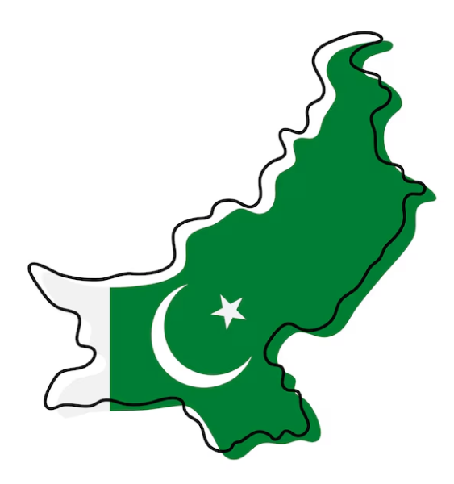
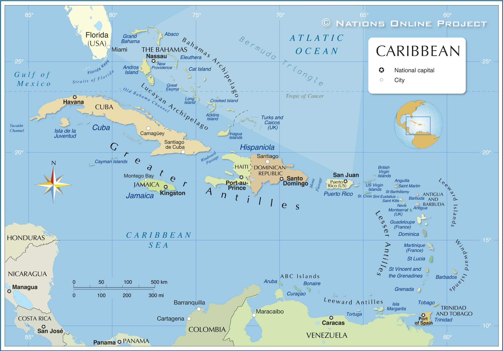
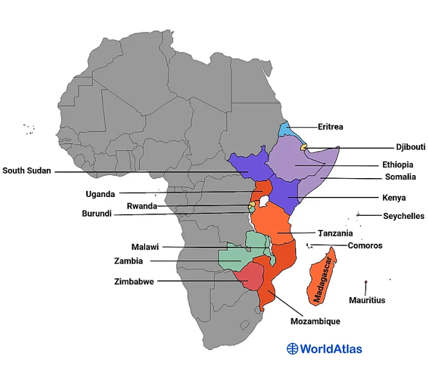

Mid 20th century migration (1962-2001)
Throughout the first half of the twentieth century, the discriminatory
Canadian immigration policies kept South Asian muslims from migrating to
Canada. But the shift of policy from “national, ethnic, or racial
background” to “education and skill level” in 1962 and the “point system” in
1967 marked a new moment in the history of South Asian muslims immigration
to Canada.[10] Most of the South Asian muslims migrating under this new system belonged to a
professional and highly educated class.
The growth of the South Asian muslims in the Lower Mainland led to the formation
of community organizations like Pakistan Canada Association in 1963, and British
Columbia Muslim Association in 1966. Alongside, more culture focused organizations
like Lower Mainland Bengali Cultural Society established in 1979 also involved
muslim community members. During the 1980s and 1990s, different muslim sects
also started building their own mosques, and educational centers in B.C. There
are 61 mosques spread across BC of these different sects.[11]
South Asian muslim migration to B.C during this time period was also influenced
by events like the exodus of Ismaili communities from East Africa, the formation
of Bangladesh, the declaration of the Ahmaddiya community as non-muslims in Pakistan,
the independence of Caribbean states, and a series of coups d'état in Fiji. As
a result of these events, South Asian muslims from diverse sects, geographies,
and cultures started migrating to Canada and B.C.
Similarly, during this time period, despite the state's promotion of multicultural
policies, racism, Islamophobia, and labor exploitation were still rampant in
the Canadian societies. In order to fight back, Muslim community members would
often join different organizations.
Pakistani

Some of the prominent members of this early Pakistani community in B.C included Riasat Ali Khan (1934- 2003), HJ Malik, Dr. Aftab Mufti, Nuzhat Amin, Saleem Raza (1932-1983), Liaqaut Ali Bajwa (1951-2022), and Zahid Laeeq (1952-2008).
Riasat Ali Khan, who came to Canada in 1959, was a founding member of the first mosque in Western Canada in Vancouver, founder of the Pakistan-Canada Association and a vocal advocate for multiculturalism. In 1963, he was also Canada's only Muslim probation officer. A successful businessman, Mr. Khan was active in backroom politics of the Liberal Party in British Columbia and tried unsuccessfully to win a federal Liberal nomination in the 1997 election. He was also a long-time member of the municipal Surrey Electors Team. Unfortunately, he was shot to death in 2003 at the age of 69.[12]
Interviews with Dr. Aftab Mufti, a computer science professor, and Nuzhat Amin, a journalist, were conducted in 1974-75 and the interview transcripts have been preserved in the Royal BC Museum Archives.
Born in Amritsar as a Christian, Saleem Raza converted to Islam after partition and settled in Lahore. He migrated to Vancouver Canada in 1975 and died in 1983. He was one of the most well known playback singers of Pakistani film industry in its early decades.[13]
Liaquat Ali Bajwa served as a president of Pakistan Canada Association multiple times and was a lifelong trustee of Al Jamia Mosque. He passed away recently in 2022.[14]
Lastly, Zahid Laeeq was a well known Urdu poet who came to Canada and B.C in 1999/2000. Along with poetry, he also published a multilingual monthly magazine Shahpara for eight years. He passed away in 2008.[15]
Resources:
- Newspapers
- Voice of Pakistan https://newspapers.lib.sfu.ca/vop-collection (1972-73) (English/Urdu)
- Crescent https://newspapers.lib.sfu.ca/crt-collection (1973-1981) (English/Urdu)
- Al Hilal https://newspapers.lib.sfu.ca/ah-collection (1981-1987) (English/Urdu)
- The Messenger https://newspapers.lib.sfu.ca/mess-collection (1978-1984) (Urdu)
- Dr. Aftab Mufti and Nuzhat Amin interview transcripts https://search-bcarchives.royalbcmuseum.bc.ca/immigrants-interviews
- Riasat Ali Khan Photograph: http://chilliwack.pastperfectonline.com/photo/C848A69A-033A-4BAD-A71C-382849870200
Bengali
Beyond this early twentieth century time period, it was mostly in 1970's that a number of Bengali community members started migrating to Canada. Consequently, Bengali organizations started emerging across Canada during this time period. In the case of B.C, Lower Mainland Bengali Cultural Society of BC (LMBCS) was formed in 1977. Most of its executive members came from a highly educated, urban professional class, called bhadralok.[16] Alongside, Canada Bangladesh Culture Association of B.C was established around 1988-89, and the Bangladesh Cultural was established in 1992-93.[17] While these Bengali organizations were not overtly Islamic, a number of their community participants were muslims.
In 1998, a Bengali community member in Vancouver, Rafiqul Islam (1950-2013), established Mother Language Lovers of the World Society, with his fellow colleague Abdus Salam. The Society played a significant role in getting 21st February declared as International Mother Language Day in 1999.
The Caribbean

Fiji
Along with the Indo Caribbean Islands, Fiji was another location where East Indians were sent as indentured laborers between 1879 and 1920. Within these 41 years, over “60,553” East Indians were transported to Fijian shores.[22] Around “7,200” of them were muslims.[23] Because of the miserable living and working conditions, “more suicides occurred in Fiji than any other British Colony at the time.”[24] Over time, Indo-Fijian communities also adapted their religious and cultural practices to the new Fijian environment they found themselves in.
After the abolition of indentured labor in 1920, around 60% of Indo Fijians decided to stay back in Fiji.[25] A series of military coups d'état in Fiji between 1987 and 2000 resulted in an increased discrimination against Indo Fijian communities, forcing them to migrate to countries like Canada.[26]
East Africa / Ismaili Muslims

The migration of Ismaili Muslims from Tanzania and Uganda to Canada in the 1970s was a result of political instability, discriminatory policies, and the quest for a better and secure future. While there was relatively low, but consistent migration coming in from the Ismaili population in Tanzania, there was a sudden abundance coming in after the implementation of the nationalization policies outlined in the Arusha Declaration of 1967. Tanzanians were some of the first Ismailis to immigrate to Canada, and hence, were instrumental in the founding of the country's first Jamatkhanas/ Prayer Halls. A Jamatkhana built in Burnaby in 1985 was the first purpose-built Ismaili jamatkhana and the first Ismaili centre in North America. It cost over $10 million.
Alongside, a large number of Ugandan-Asian Ismaili Muslims also started migrating to Canada after they were ordered to leave Uganda within 90 days by Idi Amin in August 1972. A particularly large community of these East African Ismaili Muslims settled in Vancouver and its surrounding areas. During the early 1970s, the Citizen newspaper of Prince George, welcomed the refugees coming in from Uganda.
Resources:
The story of a family which migrated from Uganda to Prince George, Ashakali Hassam, his wife Roshi, and their daughter Nargis. (December 04, 1973)
Community Activism
In the light of these events, South Asian muslim community members often joined diverse organizations like Canadian Farmworkers Union (1979-2004), Indian People's Association of North America (1973-1995), BC Organization to Fight Racism (1973-1990), and BC Muslim Association to resist and fight back.
Outside Canada, the events in India during this time period also affected the muslim communities of B.C. A conference organized in Vancouver in 1987, titled “Centralized State Power and the threat to minorities in India” involved active participation of Council of Muslim Communities of Canada, B.C Muslim Association, and Canadian Society of Fiji Muslims. Similarly, following the attack on Babri Mosque in India in December 1992, Dr. Hari Sharma, a well known activist and professor at SFU, formed Non-Resident Indians for Secularism and Democracy (NRISAD). One of the aims of NRISAD was to unite South Asian people of diverse religions, cultures, histories, and geographies, including Muslims, together.[28] The 50th anniversary of South Asia's independence organized by NRISAD in 1997 also involved a number of Muslim community organizations.
Resources:
- 50th Anniversary Celeberation.pdf
- Centralized State Power and the threat to minorities in India.pdf
- “Rude Bunch boos plans for Mosque” Edmonton Journal, 18 December, 1980
- Port Coquitlam residents oppose the mosque https://www.proquest.com/hnpvancouversun/historical-newspapers/july-15-1998-page-20-60/docview/2318109350/sem-2?accountid=5705
- “Vandals Damage Richmond Temple” https://www.proquest.com/historical-newspapers/june-22-1983-page-29-104/docview/2241319294/se-2?accountid=5705
- Muslim Proposal to build mosque in Richmond rejected https://www.proquest.com/historical-newspapers/october-27-1977-page-37-44/docview/2380079780/se-2?accountid=5705
- Sun Campaigning against Muslims https://www.proquest.com/historical-newspapers/august-18-1978-page-5-116/docview/2244340157/se-2?accountid=5705
Muslim women
In 1988, BCMA also established its women's chapter to cater to the needs and demands of muslim women.[29]
Resources:
Bibliography
[10] Tanya Sabena Khan,A Part of and Apart from the Mosaic: a Study of Pakistani Canadians’ Experiences in Toronto during the 1960s and 1970s, 2012, 83.https://central.bac-lac.gc.ca/.item?id=TC-QMM-114157&op=pdf&app=Library&oclc_number=921889158
[11] “List of Mosques in British Columbia.”SmartScrapers. Modified January 09, 2024.https://rentechdigital.com/smartscraper/business-report-details/canada/british-columbia/mosques
[12] Robert Matas, “Pakistani community leader shot to death in B.C.”, January 7, 2003.
[13] “Popular playback singer Saleem Raza remembered”,Business Recorder, November 26th, 2005,https://fp.brecorder.com/2005/11/20051126357433/
[14] “LIAQUAT ALI BAJWA: Pioneering Member Of Local Pakistani-Canadian Community Passes Away”, Desi Buzz, February 6, 2022.https://desibuzzcanada.com/post/liaquat-ali-bajwa-pioneering-member-of-local-pakistani-canadian-community-passes-away
[15] “Poet Zahid Laeeq”, Uddari Weblog, https://uddari.wordpress.com/2008/11/04/poet-zahid-laeeq/
[16] Bidisha Ray, “Migration of Bengalis to Canada: An Historical Account”,Canada 150 Conference Proceedings: Migration of Bengalis, edited by Habia Zaman and Sanzida Habib, 42.
[17] Sanzida Habib and Hafizul Islam “GVBCA: Celebrating and Incorporating Bengali Culture in Multicultural Canada”,Canada 150 Conference Proceedings: Migration of Bengalis, edited by Habia Zaman and Sanzida Habib, 166.
[18] Lomrash Roopnarine. “Indo-Caribbean Migration: From Periphery to Core.”Caribbean Quarterly 49, no. 3 (2003): 30–60.http://www.jstor.org/stable/40654409. 31.
[19] Karimah Rahman’s interview transcript titled “Muslim Indo-Caribbean Identity in the Caribbean and Diaspora in Canada”,https://studentlife.utoronto.ca/wp-content/uploads/Subaltern-Speaks-S2-E2-Transcript.pdf, 2.
[20] Roopnarine. “Indo-Caribbean Migration”, 31.
[21]Roopnarine. “Indo-Caribbean Migration”, 37.
[22] Rizwaan S. Abbas, “Indo-Fijians: Our long journey Home”,A Social History of South Asians in British Columbia, edited by Satwinder Kaur Bains and Balbir Gurm, 140.
[23] Abbas “Indo-Fijians: Our long journey Home”, 140.
[24] Abbas “Indo-Fijians: Our long journey Home”, 142.
[25] Abbas “Indo-Fijians: Our long journey Home”, 146.
[26] Brij Lal,Bittersweet: The Indo-Fijian Experience,Pandanus Books, Canberra, Australia,304
[27] Karim H. Karim, “At the Interstices of Tradition, Modernity and Postmodernity: Ismaili Engagements with Contemporary Canadian Society”,A Modern History of the Ismailisedited by Farhad Daftary, I.B.Tauris Publishers, 2011, 280.
[29] BC Muslim Association, 40th anniversary,http://www.thebcma.com/upload/pdf/bcma.pdf